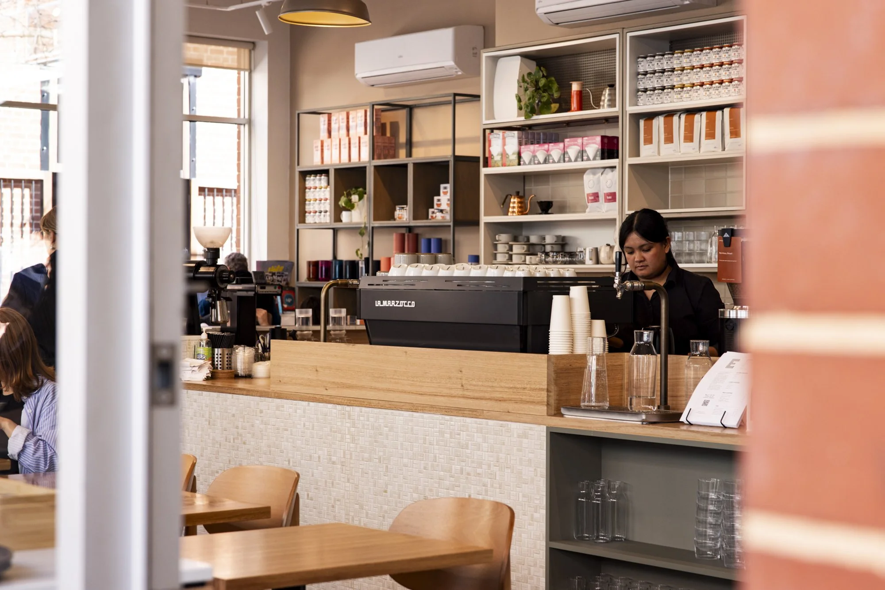
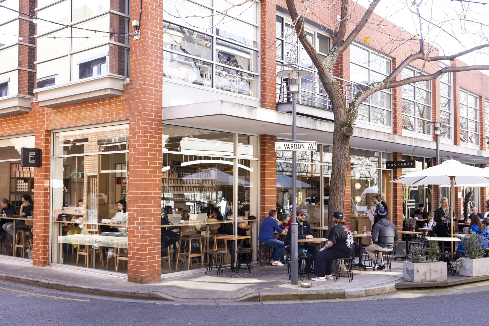
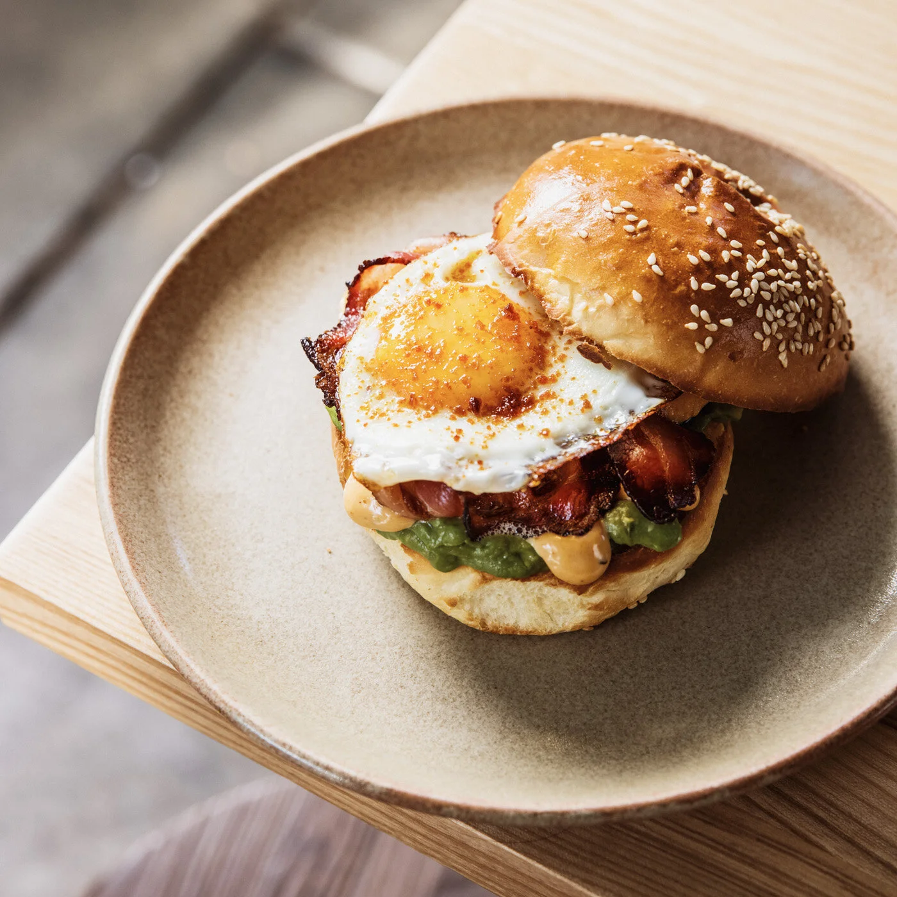
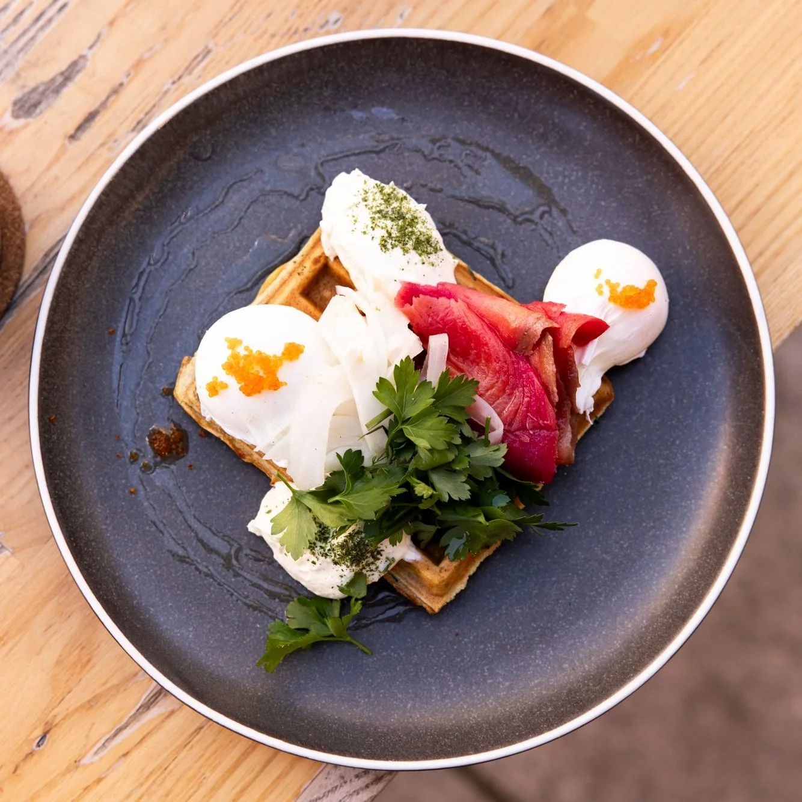
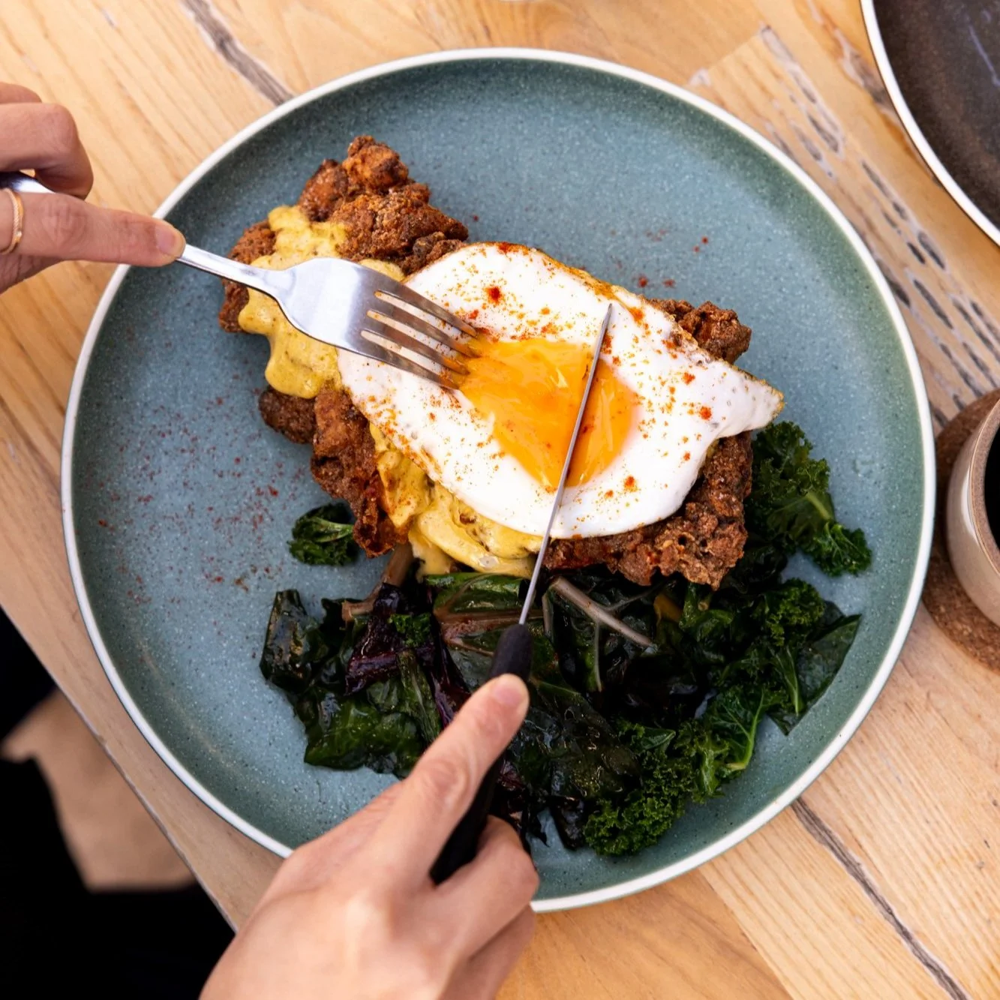
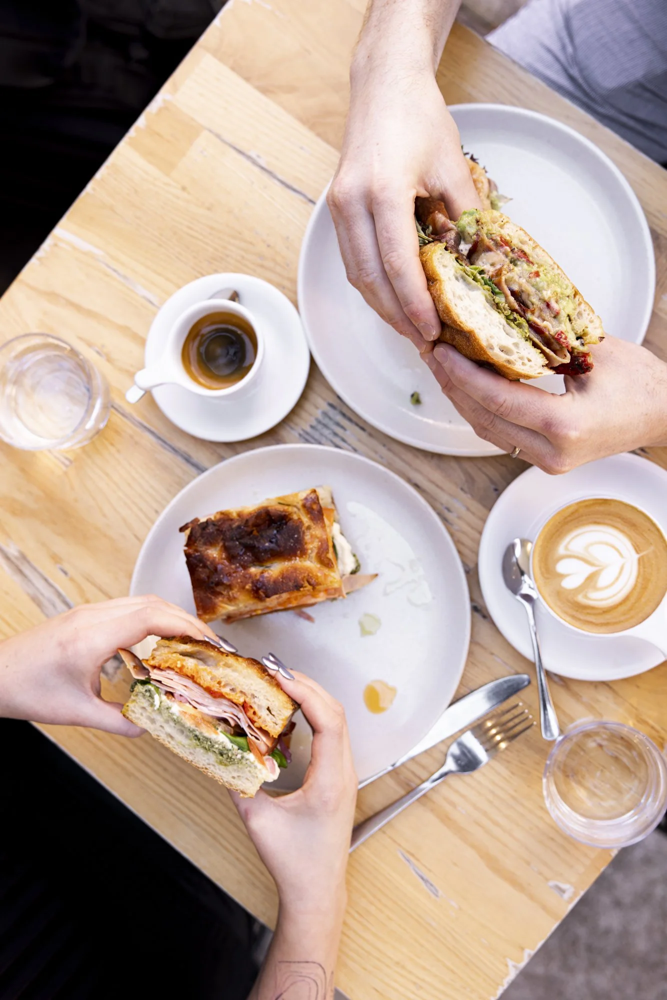
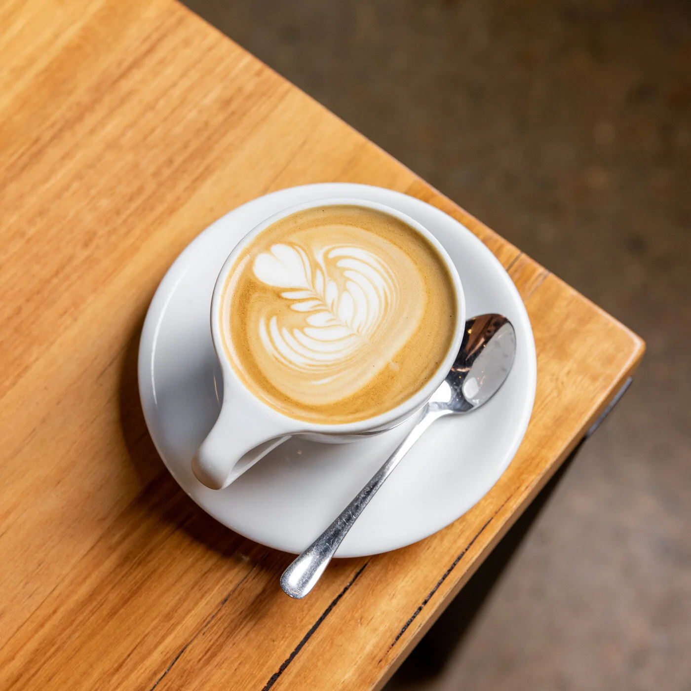
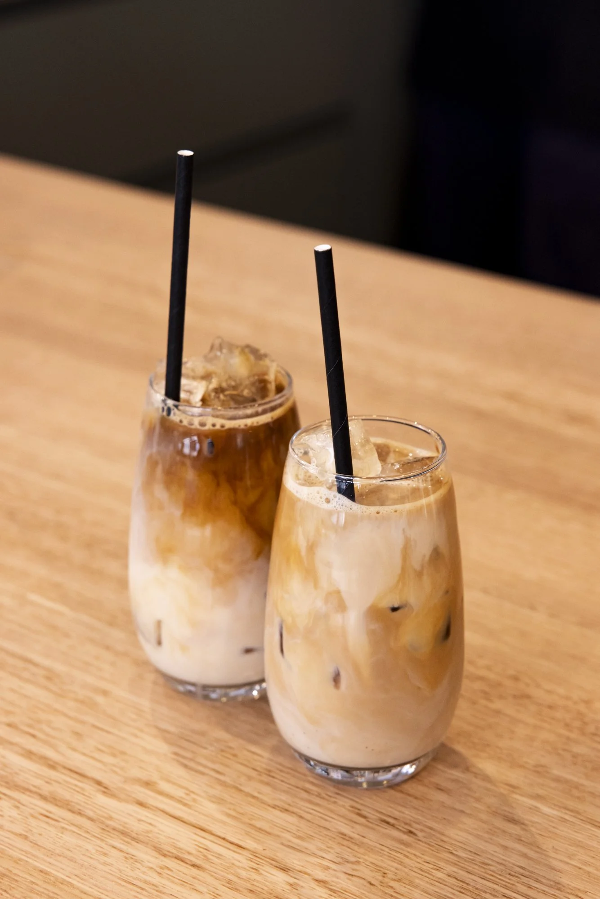

SABOROSOS E NUTRITIVOS: NOSSAS “MELHORES OPÇÕES”!
Pão de queijo, croissants, panquecas e outras escolhas para matar a fome e deixar a pausa ainda melhor.
Ver catálogoUma pausa com sabor
cafés quentes, lanches e pequenos prazeres
para acompanhar seu dia. Escolha seus
favoritos e receba onde estiver.

Sinta-se em casa
Do primeiro café ao lanche da tarde,
a Nogueira Coffee acompanha o seu ritmo.
Peça pelo delivery ou escolha retirar.

Encontre seu favorito
Do pão de queijo ao café expresso: escolha sabores
que combinam com a sua próxima pausa.




Para cada vontade
Pão de queijo, croissants, panquecas e outras escolhas para matar a fome e deixar a pausa ainda melhor.
Ver catálogo
Expresso, cappuccino, latte ou mocha.
Seu próximo café começa com uma escolha.

Do cold brew ao matcha latte, descubra
bebidas geladas e alternativas no delivery.